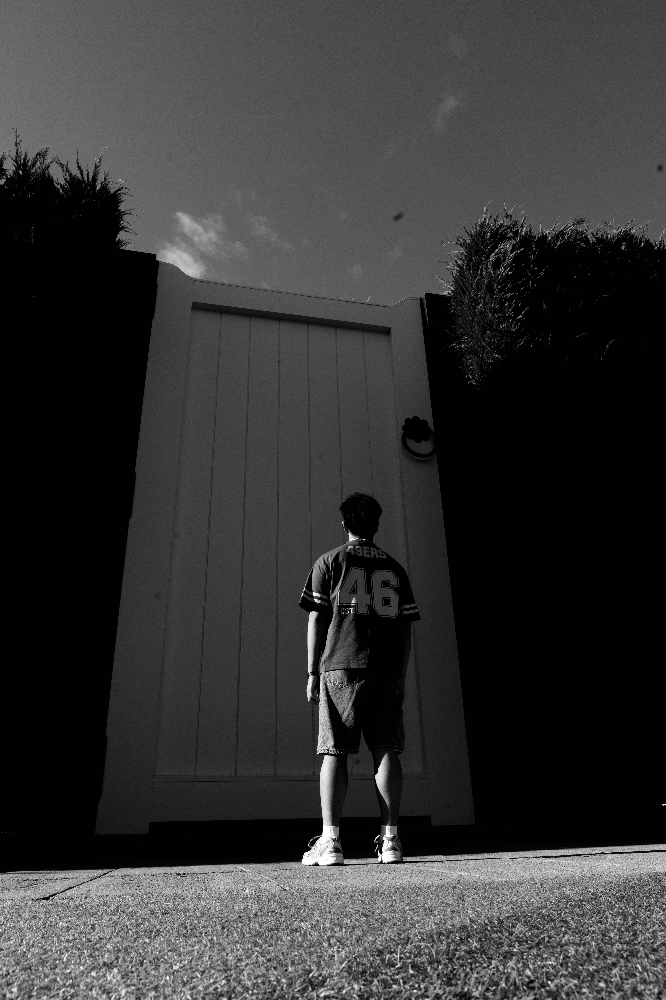
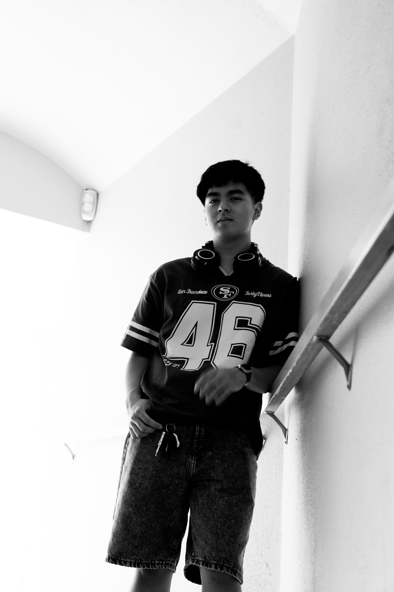
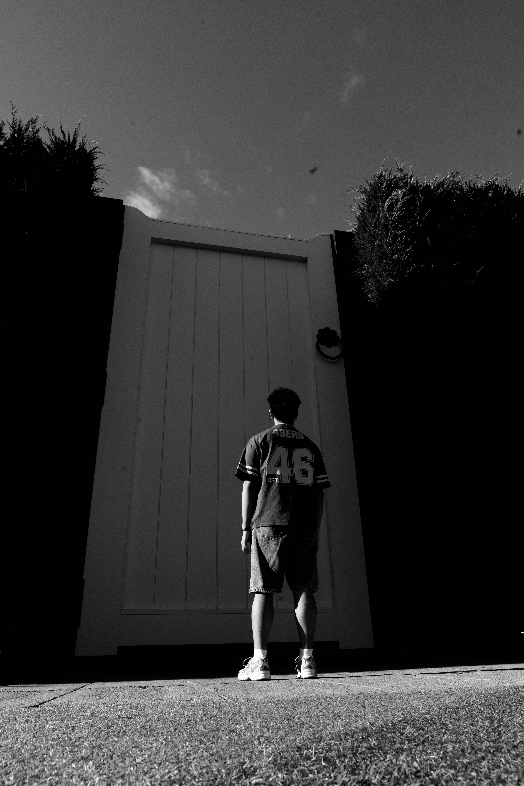
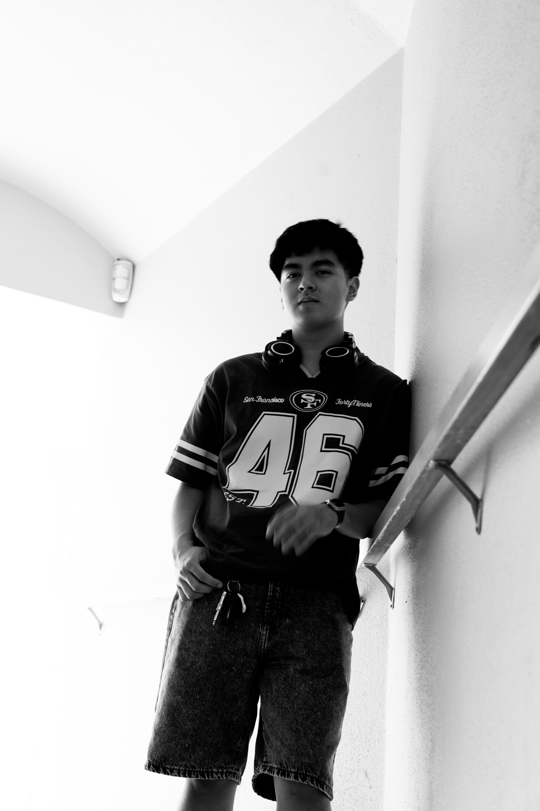
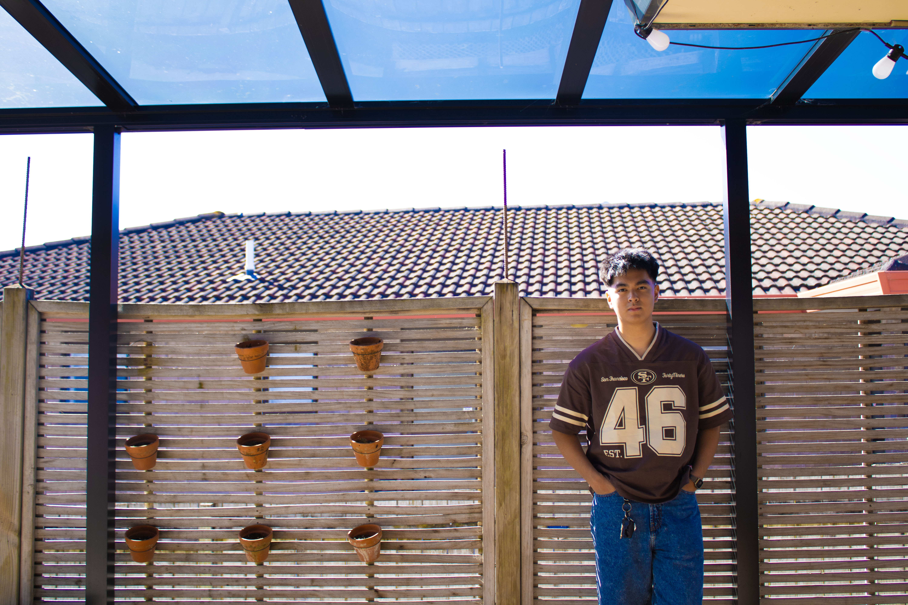
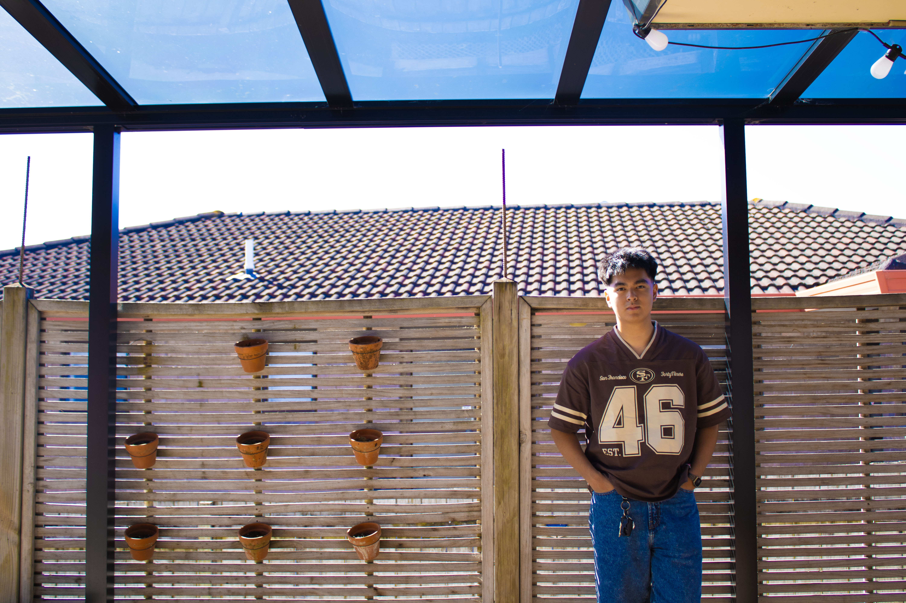
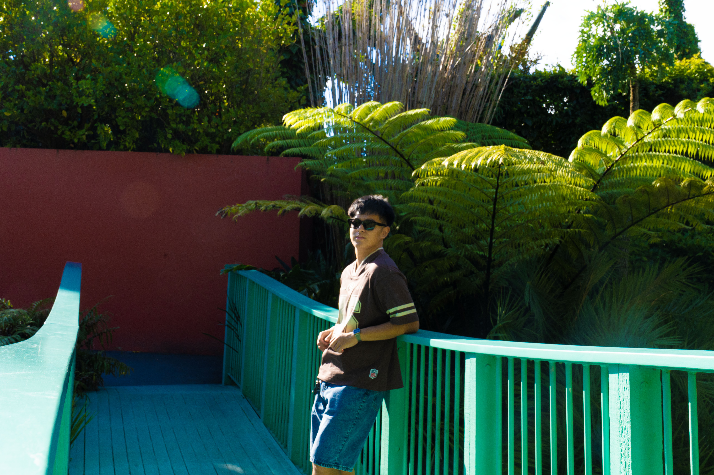
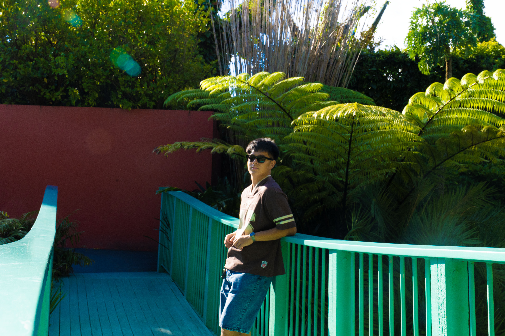
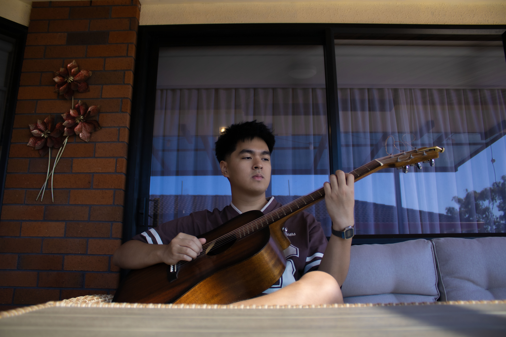
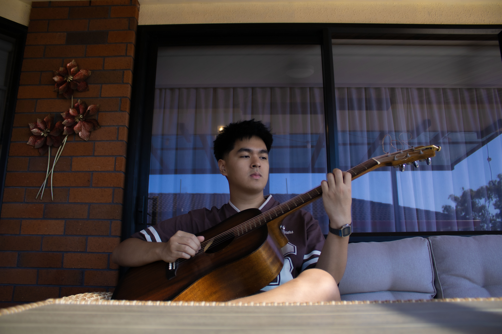

Portfolio
Point of View
refers to the position or angle from which the photographer take a photo.

It is all about where the camera is placed in relation to the subject. It can dramatically change how the subject looks and how viewer feels about the photo.
Black and White
a timeless and emotional quality that highlights the mood, contrast, texture,
and form over colour.
 



Without colour, black and white photography allows viewers to focus more on the subject’s shapes, shadows, and light, often creating a more dramatic feel.
Lines
refers to a visual path that leads the viewer’s eye through the image.
 


It guides attention, create depth, suggest movement, and add structure to a photo.
Foreground, Mid, and Background
refers to describe the depth and layers within a photo.
 


Foreground: part of a photo that’s closest to the camera.
Middleground: area between the foreground n background.
Background: part that’s furthest from the camera.
It helps create a sense of space and dimension, making images feel more dynamic and realistic.
Rule of Thirds
the grid — a fundamental composition guideline that suggests dividing the image into nine equal parts
using two equally spaced horizontal lines and two equally spaced vertical lines.
 

It creates a more balanced, dynamic, and visually appealing image, rather than centering the subject.